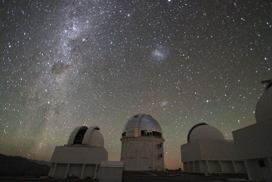

ابزارالات نجوم
در طول تاریخ، همواره بشر از ابزارهای گوناگونی برای شناخت دقیق تر اجرام آسمانی استفاده کرده است. در ادامه ابتدا با مهم ترین ابزار نجومی باستان، یعنی اسطرلاب آشنا می شوید و سپس گونه های مختلف تلسکوپ های نوری و رادیویی و رصدخانه ها را مورد بررسی قرار می دهیم.
اسطرلاب
متاسفانه امروزه، واژه اسطرلاب به صورت مرکب "رَمل و اسطرلاب" مصطلح شده
است که نوعی مفهوم فالگیری و طالع بینی از آن مستفاد می شود. در صورتی که
رمل موضوعی بی پایه و مجموعه اعمالی برای فالگیری، اما اسطرلاب ابزاری
نجومی و برای اندازه گیری است
با اسطرلاب می توان ارتفاع ستاره ها، ماه و خورشید را تعیین کرد. همچنین
اسطرلاب، نمودارها و صفحه هایی دارد که تعیین مکان ستاره ها نسبت به افق،
تعیین مکان خورشید و ماه و سیارات را نسبت به ستاره های ثابت و تعیین
زمان را ممکن می کند
اسطرلاب انواع مختلفی دارد که اسطرلاب مسطح، کروی و خطی از آن جمله اند.
اما اسطرلاب مسطح رایج ترین نوع بود که طی قرن های میانی، تا حد ممکن
کامل شد. احتمالا اسطرلاب مسطح در حدود قرن دوم میلادی در یونان اختراع
شد؛ ولی در دوره اسلامی تکامل یافت و به یکی از مهم ترین ابزارهای نجومی
تبدیل شد
قدیمی ترین نوشته های دوره اسلامی درباره اسطرلاب از ابواسحاق فزاری (قرن
دوم هجری قمری) و ماشاءالله علی ابن عیسی و محمد ابن موسی خوارزمی (اوایل
قرن سوم ه.ق) است. اروپاییان در قرون دوم و سوم هجری، بعد از اینکه
مسلمانان اسپانیا را فتح کردند، با اسطرلاب آشنا شدند. قدیمی ترین
اسطرلاب اروپایی از حدود قرن ۱۲ میلادی به یادگار مانده است
طی هزار سال گذشته، کتاب های متعددی درباره اسطرلاب به زبان فارسی و عربی
نوشته شده است. کتاب های "معرفه الاسطرلاب" از محمد ابن ایوب طبری (نیمه
دوم قرن پنجم ه.ق)، "استیعاب" ابوریحان بیرونی (قرن پنجم ه.ق) و "بیست
باب" از خواجه نصیرالدین طوسی (قرن هفتم ه.ق) از آن جمله اند. طی این
دوره اسطرلاب سازان مشهوری نیز دقیق ترین و زیباترین اسطرلاب ها را ساخته
اند. محمد امین عبدالغنی در زمان شاه عباس اول، عبدالائمه (نیمه اول قرن
دوازدهم ه.ق) و محمد مقیم ابن عیسی (قرن یازدهم ه.ق) از جمله این
صنعتگران ماهر بوده اند. اسطرلاب شاه سلطان حسین صفوی بی تردید زیباترین
و دقیق ترین اسطرلابی است که می توان نام برد. این اسطرلاب اکنون در موزه
بریتانیا نگه داری می شود
اسطرلاب مسطح
اسطرلاب در واقع مدل آسمان در روی یک صفحه است؛ با این فرض که زمین در
مرکز عامل قرار گرفته است و اجرام آسمانی به دور آن می گردند. برای ساختن
ماکت آسمان و نیز برای اندازه گیری زوایا، قطعاتی در اسطرلاب مسطح وجود
دارد که در شکل زیر مشخص اند
بدنه اصلی اسطرلاب، صفحه مدور محکمی است که اُمّ نامیده می شود. در سطح
اُم که حاشیه آن اندکی فرورفته است، صفحات مدوری قرار می گیرند. این
صفحات نسبتا نازک را صفیحه می نامند. صفیحه، تصویر دو بعدی نیمکره آسمان
بالای سر ما را نشان می دهد. روی صفیحه دوایر مهم آسمان، نقطه بالای سر
(سمت الراس)، مدارها و … را نشان می دهند. صفیحه برای نشان دادن عرض های
جغرافیایی مختلف، قابل تغییر است. روی صفیحه قطعه مدور دیگری به نام
عنکبوت قرار می گیرد. عنکبوت به صورت شبکه های است که در آن، شاخص های
نوک تیزی درست شده است
نوک این شاخص ها، موقعیت ستاره های پر نور آسمان را نشان می دهد. وقتی که
عنکبوت روی صفیحه قرار می گیرد، صفیحه از میان شبکه عنکبوت دیده می شود.
در مرکز عنکبوت هم سوراخی وجود دارد. با قرار دادن صفیحه در درون اُم و
عنکبوت سوراخ مرکزی هر سه بر هم منطبق می شود. در این سوراخ، محور کوچکی
قرار می گیرد که آن را قطب یا وَتَد می نامند. عنکبوت به اُم گیر نمی
کند. بنابراین می تواند حول قطب بچرخد. در پشت اسطرلاب نیز ابزاری خط کش
مانند به طول قطر دایره اسطلاب وجود دارد که با استفاده از آن ارتاع
ستاره ها را اندازه می گیرند
تا ابتدای قرن هفدهم، اخترشناسان در رصدهایشان از اسطرلاب، زاویه سنج های
ساده و ابزارهای ابتدایی بهره می بردند؛ اما در سال ۱۶۰۹ میلادی برای
نخستین بار گالیله از تلسکوپ (از گونه شکستی) برای رصدهای نجوم استفاده
کرد. به این ترتیب، تحولی بنیادی در اخترشناسی پدید آمد. از آن زمان تا
به امروز، پیشرفت های زیادی در زمینه ساخت تلسکوپ ها رخ داده است؛ به
طوری که امروزه، تلسکوپ های فضایی ساخته شده اند و در مداهایی به دور
زمین قرار گرفته اند. در این بخش، اصول و مبانی برخی از تلسکوپ ها را
بررسی می کنیم
تلسکوپ شکستی (عدسی)
در ساختار تلسکوپ های شکستی، نور رسیده از اجرام آسمانی از عدسی هایی
عبور می کنند. ساده ترین نوع تلسکوپ های شکستی به این صورت است که دو
عدسی در دو سرلوله تلسکوپ قرار می گیرد. آن عدسی را که رو به سمت اجرام
آسمانی مانند ستاره ها و ماه و … قرار دارد، عدسی شیئی می نامند و عدسی
دیگری را که ناظر از آن تصویر را می بیند، چشمی می گویند
نور اجرام آسمانی از فاصله بسیار دوری به ما می رسد. به همین دلیل به
صورت پرتوهای موازی از عدسی شیئی می گذرد. پرتوها پس از گذر از عدسی شیئی
می شکنند و در نقطه ای به نام کانون، متمرکز می شوند. شاید شما هم تجربه
کرده باشید که اگر یک عدسی را در مقابل نور خورشید نگه دارید، پرتوهای
خورشید را در یک نقطه کانونی می کند. فاصله میان کانون و عدسی شیئی را
فاصله کانونی عدسی شیئی تلسکوپ می نامند که برای هر تلسکوپی، اندازه آن
مشخص است و قابل تغییر نیست. کار عدسی چشمی، بزرگنمایی تصویر است. در
تلسکوپ ها، عدسی چشمی قابل تغییر است و در نتیجه بزرگنمایی تغییر می کند
ساخت تلسکوپ های شکستی با محدودیت هایی همراه است. یکی از مهم ترین
مشکلات آن ها این است که عدسی های شیئی بزرگ و ضخیم وزن زیادی دارند؛ به
همین دلیل عدسی تغییر شکل می یابد و تصویر بدرست کانونی نمی شود. از سوی
دیگر، عدسی ها در تصویر خطای رنگی ایجاد می کنند و ساخت عدسی های بزگ و
بدون خطای رنگی بسیار پرهزینه است. تصویر پایین، بزرگ ترین تلسکوپ شکستی
دنیا را با قطر عدسی یک متر نشان می دهد
تلسکوپ های بازتابی
در تلسکوپ های بازتابی، یک آینه مقعر نور را جمع و در یک نقطه کانونی می کند که آن را آینه اصلی تلسکوپ می نامند. در تلسکوپ های بازتابی، این آینه نقش همان عدسی شیئی را در تلسکوپ های شکستی دارد؛ ولی در انتهای لوله تلسکوپ قرار می گیرد. نور از آینه اصلی به سوی آینه دیگری باز می تابد و از آن جا به عدسی چشمی می رسد. تلسکوپ های بازتابی مختلف، ساختمان های نوری متفاوتی دارند. ساده ترین گونه آنها، تلسکوپ نیوتونی است که نخستین بار نیوتون آن را ابداع کرد. در این گونه، نور از آینه اصلی به یک آینه کوچک تخت می تابد. این آینه در نزدیکی فاصله کانونی آینه اصلی است و نور رسیده از آینه اصلی را به عدسی چشمی که روبه روی آینه تخت قرار دارد، می رساند
تلسکوپ فضایی هابل
اخترشناسان حتی پیش از آغاز عصر فضا، این رویا را در سر داشتند که
تلسکوپی را در مداری به دور زمین قرار دهند؛ زیرا تلسکوپ در بیرون از جو،
بهتر از هر ابزاری در سطح زمین می تواند اعماق کیهان را رصد کند. این
رویا در آغاز سال 1369 هجری شمسی به واقعیت پیوست و یک شاتل فضایی توانست
تلسکوپ 1.5 میلیارد دلاری هابل را در مداری به دور زمین قرار داد. تلسکوپ
هابل از گونه بازتابی کاسگرین است و آینه اصلی آن 2.4 متر قطر دارد. این
تلسکوپ با راینه از زمین کنترل می شود و نسبت به تلسکوپ های زمینی چند
مزیت عمده دارد. توان تفکیک آن نسبت به تلسکوپ های زمینی بیشتر است.
همچنین به بخش فرابنفش و فروسرخ طیف نور نیز حساس است
حدود دو ماه پس از پرتاب، مشخص شد که آینه اصلی هابل خطای کروی دارد و
نور را با دقت مورد نظر کانونی نمی کند. سرانجام با بررسی های بسیار
اخترشناسان تصمیم گرفتند که با کار گذاشتن ابزارهایی در تلسکوپ، خطای
کرویت آن را تصحیح کنند. در آذر ۱۳۷۲ ه.ش چندین فضانورد کارآزموده تلسکوپ
فضایی هابل را تعمیر کردند. البته اخترشناسان از سال ۱۳۶۹ ه.ش تا ۱۳۷۲
ه.ش نیز از هابل استفاده می کردند و خطا کرویت آن با رایانه تاحدودی
تصحیح می شد، اما پس ا تعمیر، کیفیت تصاویر ارسالی هابل بسیار بهتر شده
است. اخترشناسان با به کار گیری هابل، ساختارهای سطحی سیارات تا کهکشان
های دوردست را رصد می کنند. تصاویر دقیق هابل، دانش ما را درباره بسیاری
از زمینه های نجوم تغییر داده است
رصدخانه

تلسکوپ های بزرگ، در ساختمانی به نام رصدخانه قرار می گیرند و نگهداری می
شوند. معمولا ساختمان رصدخانه از دو بخش عمده، یعنی بدنه استوانه ای و
گنبد تشکیل می شود. گنبد رصدخانه روی بدنه استوانه ای قرار می گیرد. علت
این که سقف رصدخانه ها بییشتر گنبدی ساخته می شود، این است که تصور ما از
آسمان بالای سرمان، به شکل نیمکره است و ساختار گنبدی با این شکل سازگار
است
در گنبد رصدخانه، دریچه ای از بالا تا لبه گنبد وجود دارد. در هنگام رصد،
دریچه باز می شود و موتوری گنبد را به هر سوی آسمان که لازم باشد، حرکت
می دهد. به این ترتیب، تلسکوپ نیز حرکت می کند و از شکاف دریچه، رصد آن
جسم ممکن می شود. برخلاف تصور بسیاری از مردم، برای رصد آسمان هیچ گاه
لوله تلسکوپ از دریچه گنبد خارج نمی شود
امروزه، تلسکوپ های پیشرفته دنیا با استفاده از رایانه های دقیقی کنترل
می شوند و عمدتا با استفاده از فیلم های عکاسی یا تراشه های رایانه ای از
اجرام آسمانی عکس برداری می کنند. شاید به ندرت منجمان حرفه ای با چشم
خود پشت تلسکوپ به رصد بپردازند